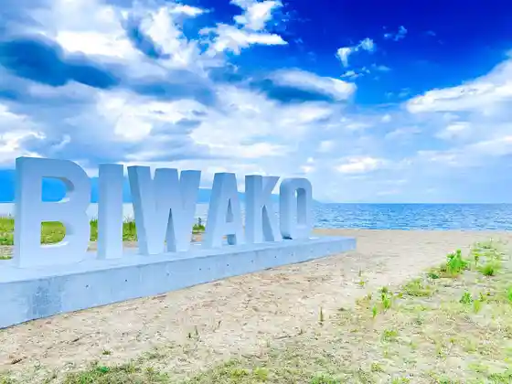
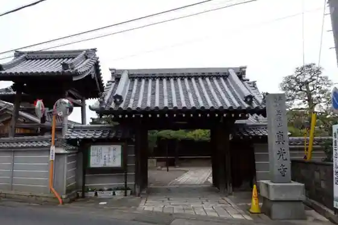
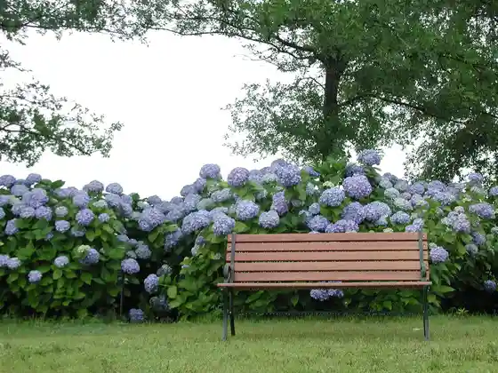
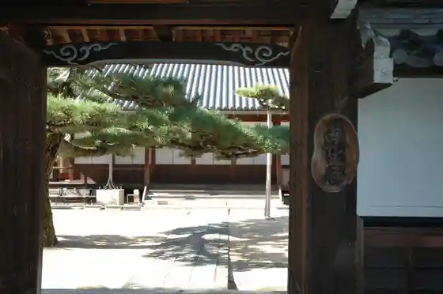

Dai 2 Nagisa Park
Moriyama, Shiga · 077-584-5330 · Official / source link

Masamitsu Tera (Moriyama)
Moriyama, Shiga · 077-585-350 · Official / source link

Moriyama Ashikari Sono (Ajisai Sono)
Moriyama, Shiga · 077-585-7133 · Official / source link

Rensho Tera
Moriyama, Shiga · 077-582-2465 · Official / source link

Ozu Shrine
Moriyama, Shiga · Official / source link
Umaji Ishibe Shrine
Moriyama, Shiga · Official / source link
Saimyo Tera
Moriyama, Shiga · 077-582-2286 · Official / source link
Osho Ya Suwa Ie Residence
Moriyama, Shiga · 077-516-8160 · Official / source link
Katsube Shrine
Moriyama, Shiga · 077-583-4085 · Official / source link
Toyotarentariisu Shiga Moriyama Ekimae Mise
Moriyama, Shiga · 077-583-1000 · Official / source link
Moriyama Tami Horu
Moriyama, Shiga · 077-583-2532 · Official / source link
Kasahara Sakura Park
Moriyama, Shiga · Official / source link
Hotaru no Mori Museum
Moriyama, Shiga · 077-583-9680 · Official / source link
Dobashi
Moriyama, Shiga · Official / source link
Dejitarusutadomu Hotaru (Biwako Mariotto Hotel)
Moriyama, Shiga · 077-584-2180 · Official / source link
Higashimon In (Moriyama Kannon)
Moriyama, Shiga · 077-582-2193 · Official / source link
Sagawa Art Museum
Moriyama, Shiga · Official / source link
Misaki Nature Park
Moriyama, Shiga · 077-585-4280 · Official / source link
Hotel Biwako Plaza
Moriyama, Shiga · 077-585-4111 · Official / source link
Nakasendo Kaido Bunka Koryu Kan
Moriyama, Shiga · 050-5516-7991 · Official / source link
Moriyama Shokokaigisho
Moriyama, Shiga · 077-582-2425 · Official / source link
Yasu Kawa Rekishi Koen Sakka Ba (Biggureiku)
Moriyama, Shiga · Official / source link
Imahama Kosumosu Hatake
Moriyama, Shiga · Official / source link
Moriyama Ekimae Sogo Information Center
Moriyama, Shiga · 077-514-3765 · Official / source link
Ken'ei Biwako Chikyu City Tami Forest
Moriyama, Shiga · 077-585-6333 · Official / source link
Higashimon In
Moriyama, Shiga · Official / source link
Ken Tokoro Hoto
Moriyama, Shiga · 077-582-2086 · Official / source link
Moriyama Omi Myoren Park Omi Myoren Museum
Moriyama, Shiga · 077-582-1340 · Official / source link
Shinjo Town Kosumosu Sono
Moriyama, Shiga · Official / source link
Nakasendo Moriyama Yado Choka U no Ie (Moriyama Rekishi Bunka Machizukuri Kan)
Moriyama, Shiga · Official / source link
JR Moriyama Eki
Moriyama, Shiga · Official / source link
Nakasendo Moriyama Yado
Moriyama, Shiga · Official / source link
Moriyama Tami Sports Park
Moriyama, Shiga · 077-583-5354 · Official / source link
Gennai Tsuka
Moriyama, Shiga · Official / source link
Tofukuji
Moriyama, Shiga · 077-583-0321 · Official / source link
Moriyama Kanko Rentasaikuru (Misaki Park)
Moriyama, Shiga · Official / source link
Dai 1 Nagisa Park
Moriyama, Shiga · Official / source link
Biwako Rekusaidogorufukosu
Moriyama, Shiga · 077-585-1321 · Official / source link
Moriyama Eko Park Bara Sono (Kyu Moriyama Bara Habu Sono)
Moriyama, Shiga · 077-584-4692 · Official / source link
Biwako Mariotto Hotel
Moriyama, Shiga · 077-585-6100 · Official / source link
Akano I Betsuin Higashi Betsuin
Moriyama, Shiga · Official / source link
Imajuku Ichiri Tsuka
Moriyama, Shiga · Official / source link
Fukubayashi Tera
Moriyama, Shiga · 077-585-1205 · Official / source link
Shimoniikawa Shrine
Moriyama, Shiga · 077-585-2633 · Official / source link
Moriyama Yakusho
Moriyama, Shiga · 077-583-2525 · Official / source link